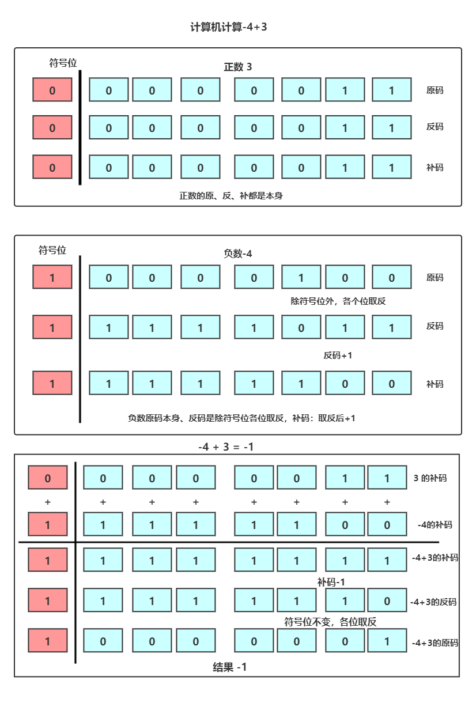
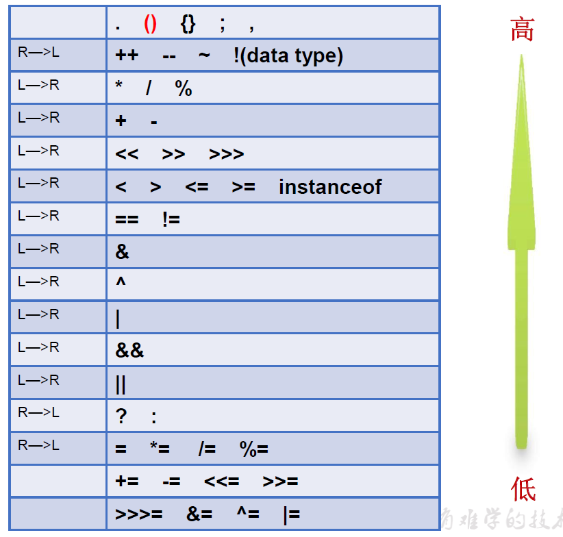

5. 运算符¶
5.1. 运算符¶
关于进制(补充)
运算符是一种特殊的符号，用以表示数据的运算、赋值和比较等。
分类
算术运算符
赋值运算符
比较运算符（关系运算符）
逻辑运算符
位运算符
5.2. 关于进制¶
5.2.1. 进制¶
所有数字在计算机底层都以二进制形式存在。
对于整数，有四种表示方式：
二进制(binary)：0,1 ，满2进1.以
0b或0B开头。十进制(decimal)：0-9 ，满10进1。
八进制(octal)：0-7 ，满8进1. 以数字
0开头表示。十六进制(hex)：0-9及A-F，满16进1. 以
0x或0X开头表示。此处的A-F不区分大小写。如：0x21AF +1= 0X21B0
5.2.2. 二进制¶
Java整数常量默认是int类型，当用二进制定义整数时，其第32位是符号位；当是long类型时，二进制默认占64位，第64位是符号位二进制的整数有如下三种形式：
原码：直接将一个数值换成二进制数。最高位是符号位
负数的反码：是对原码按位取反，只是最高位（符号位）确定为1。
负数的补码：其反码加1。
计算机以二进制补码的形式保存所有的整数。
正数的原码、反码、补码都相同
负数的补码是其反码+1
为什么要使用原码、反码、补码表示形式呢？
计算机辨别
符号位显然会让计算机的基础电路设计变得十分复杂! 于是人们想出了将符号位也参与运算的方法. 我们知道, 根据运算法则减去一个正数等于加上一个负数, 即:1-1 = 1 + (-1) = 0, 所以机器可以只有加法而没有减法, 这样计算机运算的设计就更简单了。
5.2.3. 补码的加减法依据¶
补码的加法运算所依据的基本关系为：
[x]补+ [y]补= [x+y]补
补码减法所依据的基本关系式：
[x-y]补 =[x+(-y)]补= [x]补+ [-y]补
5.2.4. 原、反、补示例讲解¶

5.3. 算术运算符¶
5.3.1. 基本算是运算符¶
算术运算符用在数学表达式中，它们的作用和在数学中的作用一样。
表格中的实例假设整数变量A的值为10，变量B的值为20：
| 操作符 | 描述 | 例子 |
|---|---|---|
| + | 加法 - 相加运算符两侧的值 | A + B 等于 30 |
| - | 减法 - 左操作数减去右操作数 | A – B 等于 -10 |
| * | 乘法 - 相乘操作符两侧的值 | A * B等于200 |
| / | 除法 - 左操作数除以右操作数 | B / A等于2 |
| ％ | 取余 - 左操作数除以右操作数的余数 | B%A等于0 |
| ++ | 自增: 操作数的值增加1 | B++ 或 ++B 等于 21 |
| -- | 自减: 操作数的值减少1 | B-- 或 --B 等于 19 |
如果单独使用，++放在变量前和变量后没有任何区别。
++A和A++的区别:++A前++ ：先++然后在赋值(或运算)A++后++：先赋值(或运算)再++public class Test { public static void main(String[] args) { int a = 10, d = 10; int b = a++; int c = ++d; System.out.println("b:" + b + " a:" + a); System.out.println("c:" + c + " d:" + d); } } // console: b:10 a:11 // c:11 d:11
--A和A--的区别:--A前– ：先–然后在赋值(或运算)A--后++：先赋值(或运算)再–public class Hello { public static void main(String[] args) { int a = 10, d = 10; int b = a--; int c = --d; System.out.println("b:" + b + " a:" + a); System.out.println("c:" + c + " d:" + d); } } // console: b:10 a:9 // c:9 d:9
如果对负数取模，可以把模数负号忽略不记，如：
5%-2=1。 但被模数是负数则不可忽略。此外，取模运算的结果不一定总是整数。对于除号
/，它的整数除和小数除是有区别的：整数之间做除法时，只保留整数部分而舍弃小数部分。 例如：int x=3510;x=x/1000*1000;x的结果是3000+除字符串相加功能外，还能把非字符串转换成字符串.例如：System.out.println(“5+5=”+5+5);结果为5+5=55
5.3.2. java和python取余运算的不同¶
java取余
public class Hello {
public static void main(String[] args) {
int a1 = 10;
int b1 = 3;
System.out.println(a1 % b1);
int a2 = 10;
int b2 = -3;
System.out.println(a2 % b2);
int a3 = -10;
int b3 = 3;
System.out.println(a3 % b3);
int a4 = -10;
int b4 = -3;
System.out.println(a4 % b4);
}
}
/*1,1,-1,-1*/
python取模
a1 = 10
b1 = 3
print(a1 % b1)
a2 = 10
b2 = -3
print(a2 % b2)
a3 = -10
b3 = 3
print(a3 % b3)
a4 = -10
b4 = -3
print(a4 % b4)
# 1,-2,2,-1
可见 对于负数的取余结果是不一样的。
原因：计算模或者余数： r = a - c*b.
求模运算和求余运算在第一步不同:求余运算在取c的值时，向0 方向舍入(fix()函数)；而取模运算在计算c的值时，向无穷小方向舍入(floor()函数)。
所谓向0 方向舍入，就是以小数点为界限，直接将小数部分去掉。如（Int）-1.324=-1（亦叫截断法）；
而向无穷小方向舍入，就是最终结果比真实值更小。如（Int）-1.324=-2；（int此处是强制转换数据类型）
因此当a和b
符号一致时，求模运算和求余运算所得的c的值一致，因此结果一致；
符号不一致时，结果不一样。
具体来说，求余运算结果的符号和a一致（截断法），求模运算结果的符号和b一致（更小法）。
5.4. 赋值运算符¶
基本赋值运算符
=当
=两侧数据类型不一致时，可以使用自动类型转换或使用强制类型转换原则进行处理。支持连续赋值。
扩展赋值运算符
+=, -=, *=, /=, %=作用：先求出运算符两边运算的结果，然后将该结果赋值给左边的变量。
举例：
m += n，先求出m和n相加的结果，然后将该结果赋值给左边的变量m。运算结果相当于m = m + n
m *= n，先求出m和n相乘的结果，然后将该结果赋值给左边的变量m。运算结果相当于m = m * n
注意：扩展的赋值运算符中蕴含了强制类型转换的操作。
//开发中，如果希望变量实现+2的操作，有几种方法？(前提：int num = 10;) //方式一：num = num + 2; //方式二：num += 2; (推荐) public class Test { public static void main(String[] args) { byte num = 127,num1 = 127; num +=2; num1 = num1 +2; // 报错 System.out.println(num); } } //开发中，如果希望变量实现+1的操作，有几种方法？(前提：int num = 10;) //方式一：num = num + 1; //方式二：num += 1; //方式三：num++; (推荐) public class Test { public static void main(String[] args) { byte num = 127,num1 = 127,num2=127; num +=1; num1 = num1 +1; // 报错 num2 ++; //比较好 System.out.println(num); System.out.println(num2); } }
特别注意：运算的结果不会改变变量本身的数据类型
5.4.1. 扩展：¶
| 操作符 | 描述 | 例子 |
|---|---|---|
| = | 简单的赋值运算符，将右操作数的值赋给左侧操作数 | C = A + B将把A + B得到的值赋给C |
| + = | 加和赋值操作符，它把左操作数和右操作数相加赋值给左操作数 | C + = A等价于C = C + A |
| - = | 减和赋值操作符，它把左操作数和右操作数相减赋值给左操作数 | C - = A等价于C = C - A |
| * = | 乘和赋值操作符，它把左操作数和右操作数相乘赋值给左操作数 | C * = A等价于C = C * A |
| / = | 除和赋值操作符，它把左操作数和右操作数相除赋值给左操作数 | C / = A，C 与 A 同类型时等价于 C = C / A |
| （％）= | 取模和赋值操作符，它把左操作数和右操作数取模后赋值给左操作数 | C％= A等价于C = C％A |
| << = | 左移位赋值运算符 | C << = 2等价于C = C << 2 |
| >> = | 右移位赋值运算符 | C >> = 2等价于C = C >> 2 |
| ＆= | 按位与赋值运算符 | C＆= 2等价于C = C＆2 |
| ^ = | 按位异或赋值操作符 | C ^ = 2等价于C = C ^ 2 |
| | = | 按位或赋值操作符 | C | = 2等价于C = C | 2 |
5.5. 比较运算符¶
5.5.1. 比较运算符¶
下表为Java支持的关系运算符
表格中的实例整数变量A的值为10，变量B的值为20：
| 运算符 | 描述 | 例子 |
|---|---|---|
| == | 检查如果两个操作数的值是否相等，如果相等则条件为真。 | （A == B）为假。 |
| != | 检查如果两个操作数的值是否相等，如果值不相等则条件为真。 | (A != B) 为真。 |
| > | 检查左操作数的值是否大于右操作数的值，如果是那么条件为真。 | （A> B）为假。 |
| < | 检查左操作数的值是否小于右操作数的值，如果是那么条件为真。 | （A <B）为真。 |
| >= | 检查左操作数的值是否大于或等于右操作数的值，如果是那么条件为真。 | （A> = B）为假。 |
| <= | 检查左操作数的值是否小于或等于右操作数的值，如果是那么条件为真。 | （A <= B）为真。 |
| instanceof | 检查是否是类的对象 | "Hello" instanceof String |
比较运算符的结果都是
boolean型，也就是要么是true，要么是false。比较运算符
==不能误写成=。
5.5.2. Java中equals和==的区别¶
java中的数据类型，可分为两类：基本数据类型，也称原始数据类型。
byte,short,char,int,long,float,double,boolean他们之间的比较，应用双等号（==）,比较的是他们的值。复合数据类型(类)
当他们用（==）进行比较的时候，比较的是他们在内存中的存放地址，所以，除非是同一个new出来的对象，他们的比较后的结果为true，否则比较后结果为false。 JAVA当中所有的类都是继承于Object这个基类的，在Object中的基类中定义了一个equals的方法，这个方法的初始行为是比较对象的内存地 址，但在一些类库当中这个方法被覆盖掉了，如String,Integer,Date在这些类当中equals有其自身的实现，而不再是比较类在堆内存中的存放地址了。 对于复合数据类型之间进行equals比较，在没有覆写equals方法的情况下，他们之间的比较还是基于他们在内存中的存放位置的地址值的，因为Object的equals方法也是用双等号（==）进行比较的，所以比较后的结果跟双等号（==）的结果相同。
5.6. 逻辑运算符¶
5.6.1. 逻辑运算符¶
与
&：逻辑与&&:短路与
或
|:逻辑或|短路或
非
!逻辑非
异或
^逻辑异或
| a | b | a&b 和a&&b | a丨b和a丨丨b | ！a | a^b |
|---|---|---|---|---|---|
| true | true | true | true | false | false |
| true | false | false | true | false | true |
| false | true | false | true | true | true |
| false | false | false | false | true | false |
逻辑运算符用于连接布尔型表达式，在Java中不可以写成
3<x<6，应该写成x>3 & x<6。&和&&的区别：单&时，左边无论真假，右边都进行运算；
双&时，如果左边为真，右边参与运算，如果左边为假，那么右边不参与运算。
|和||的区别同理，||表示：当左边为真，右边不参与运算异或(
^)与或(|)的不同之处是：当左右都为true时，结果为false。开发中，推荐使用&&
5.6.2. 例子¶
public class Test {
public static void main(String[] args) {
boolean b1 = true;
b1 = false;
int num1 = 10;
if(b1 & (num1++ > 0)){
System.out.println("aa");
}else{
System.out.println("bb");
}
System.out.println("num1 = " + num1);
}
}
// console bb,num1 = 11
public class Test {
public static void main(String[] args) {
boolean b1 = true;
b1 = false;
int num1 = 10;
if(b1 && (num1++ > 0)){
System.out.println("aa");
}else{
System.out.println("bb");
}
System.out.println("num1 = " + num1);
}
}
// console bb,num1 = 10
5.7. 位运算符¶
5.7.1. 1.位运算符¶
运算符的基本运算，假设整数变量 A 的值为 60 和变量 B 的值为 13：
| 操作符 | 描述 | 例子 |
|---|---|---|
| ＆ | 如果相对应位都是1，则结果为1，否则为0 | （A＆B），得到12，即0000 1100 |
| 丨 | 如果相对应位都是 0，则结果为 0，否则为 1 | （A B）得到61，即 0011 1101 |
| ^ | 如果相对应位值相同，则结果为0，否则为1 | （A ^ B）得到49，即 0011 0001 |
| 〜 | 按位取反运算符翻转操作数的每一位，即0变成1，1变成0。 | （〜A）得到-61，即1100 0011 |
| << | 按位左移运算符。左操作数按位左移右操作数指定的位数。 | A << 2得到240，即 1111 0000 |
| >> | 按位右移运算符。左操作数按位右移右操作数指定的位数。 | A >> 2得到15即 1111 |
| >>> | 按位右移补零操作符。左操作数的值按右操作数指定的位数右移，移动得到的空位以零填充。 | A>>>2得到15即0000 1111 |
5.7.9. 9. 注意¶
对于低于 int 类型(如byte、short和char)的操作数总是先自动转换为int类型后再移位
对于 int 类型的整数移位 a >> b, 当 b>32 时，系统先用 b 对 32 求余(因为 int 是 32 位)，得到的结果才是真正移位的位数，例如，a >> 33 和 a >> 1 的结果相同，而 a >> 32 = a
对于 long 类型的整数移位 a >> b, 当 b>64 时，系统先用 b 对 64 求余(因为 long 是 64 位)，得到的结果才是真正移位的位数
当进行移位运算时，只要被移位的二进制码没有发生有效位的数字丢失(对于正数而言，通常指被移出去的位全部是 0)，不难发现左移 n 位就相当于乘以 2 的 n 次方，右移 n 位则是除以 2 的 n 次方
进行移位运算不会改变操作数本身，只是得到了一个新的运算结果
5.7.10. 特别说明¶
位运算符操作的都是整型的数据
<<：在一定范围内，每向左移1位，相当于 * 2>>:在一定范围内，每向右移1位，相当于 / 2
5.7.11. 面试题：¶
你能否写出最高效的2 * 8的实现方式？
// 2 << 3 或 8 << 1交换两个变量的值。
1、借助中间量交换 （开发常用） int x = 10; int y = 20; int temp = x; x = y; y = temp; 2、位移运算交换 （面试常用） int x = 10; int y = 20; x = x ^ y; y = x ^ y; x = x ^ y; 3、数值相加减交换 int x = 10; int y = 20; x = x + y; y = x - y; x = x - y;
实现60的二进制到十六进制的转换
public class Test { public static void main(String[] args) { int number = 60; int compare = 15; int lastForthBit = number & compare; String lastRet = (lastForthBit > 9) ? (char) (lastForthBit - 10 + 'A') + "" : lastForthBit + ""; int temp = number >>> 4; int firstForthBit = temp & compare; String firstRet = (firstForthBit > 9) ? (char) (firstForthBit - 10 + 'A') + "" : firstForthBit + ""; System.out.println(firstRet + "" +lastRet); } }
5.8. 三元运算符¶
5.8.1. 三元运算符¶
格式：
variable x = (expression) ? value if true : value if false(条件表达式)?表达式1：表达式2；
public class Test { public static void main(String[] args){ int a , b; a = 10; // 如果 a 等于 1 成立，则设置 b 为 20，否则为 30 b = (a == 1) ? 20 : 30; System.out.println( "Value of b is : " + b ); // 如果 a 等于 10 成立，则设置 b 为 20，否则为 30 b = (a == 10) ? 20 : 30; System.out.println( "Value of b is : " + b ); } }
注意：
条件表达式的结果为boolean类型
根据条件表达式真或假，决定执行表达式1，还是表达式2.
如果表达式为true，则执行表达式1。
如果表达式为false，则执行表达式2。
表达式1 和表达式2要求是一致的。
三元运算符可以嵌套使用
凡是可以使用三元运算符的地方，都可以改写为if-else反之，不成立。
如果程序既可以使用三元运算符，又可以使用if-else结构，那么优先选择三元运算符。原因：简洁、执行效率高。
5.8.2. 转义字符¶
\n–> 回车 (linux系统)\r–> 回车(windows系统 –>\r\n)\t–> 制表符 (tab键)
5.8.3. 算术运算符优先级¶
